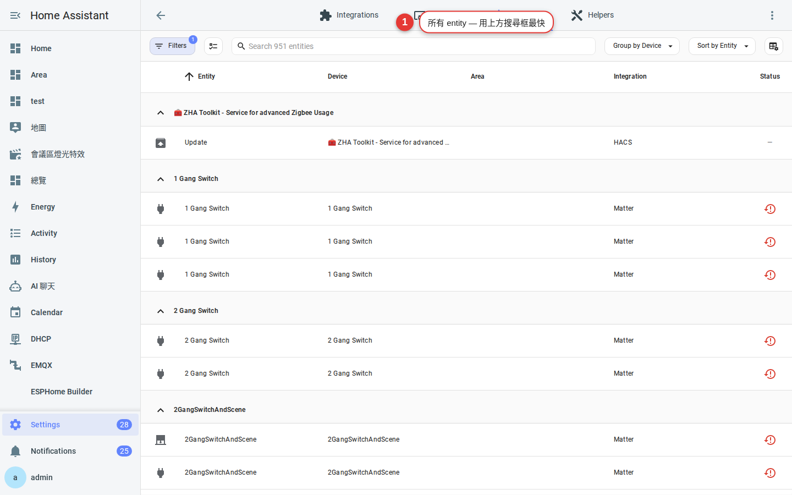
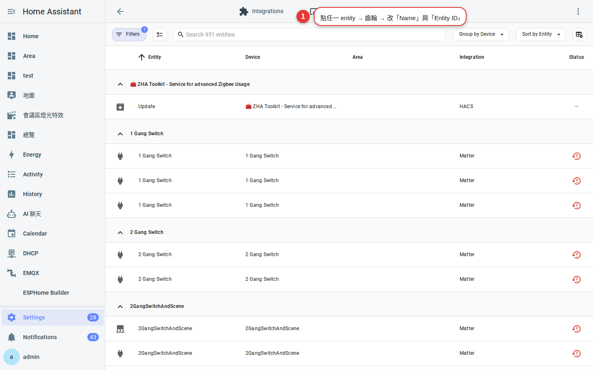
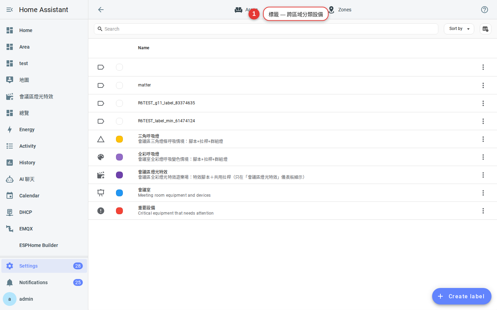

第 4 章
命名與標籤
把 switch.0x00abc123_2 改成「客廳主燈」。改完之後語音助理、儀表板、自動化通通看得懂。再學會「標籤」把同類設備群起來，之後管理省時 10 倍。
為什麼要重新命名
剛配對進來的設備，名字是廠商給的技術代號，例如：
light.aqara_light_group_2switch.0x00158d000abcd1234sensor.motion_sensor_ambient_temperature
這些名字有兩個問題：
- 語音助理不會念 — 你不會對 Google 說「請打開 aqara_light_group_2」。
- 家人看不懂 — 儀表板上一堆天書，沒人敢按。
解法：全部改成「你會脫口而出的名字」。
先分清楚三個名字
HA 有三個層級的名字，容易搞混：
- 裝置名稱（Device name）：整個設備的名字，例如「客廳吸頂燈」。
- 實體 ID（Entity ID）：程式用的內部 ID，例如
light.living_room_ceiling。寫自動化時用這個。 - 友善名稱（Friendly name）：使用者介面顯示的名字，例如「主燈」。顯示、語音用這個。
好習慣：裝置名稱寫全稱（「客廳吸頂燈」），友善名稱寫短版（「主燈」）— 因為友善名稱前面已經會加上區域，變成「客廳 主燈」剛好。
重新命名步驟
-
進「設定 → 裝置與服務 → 實體」
看到一長串所有 entity，可以用上方搜尋框快速找到某個設備。

圖 4-1實體列表 — 每一列是一個 entity，狀態、名稱、實體 ID。 -
點某個實體 → 齒輪（設定）
打開實體詳情，右上角齒輪進入設定頁。
-
改「名稱」欄位
這裡改的是友善名稱。實體 ID 不會跟著改，因為 ID 是自動化的 key，改了會壞掉。

圖 4-2編輯實體 — 「名稱」是友善名稱，「實體 ID」動的時候會警告。 -
要不要一起改實體 ID？
建議改。如果這是剛裝的裝置、還沒被任何自動化引用，直接把 ID 改成有意義的英數，例如
light.living_room_main。之後看程式碼會很容易。注意：已被自動化、腳本、儀表板引用的實體，改 ID 前先在「開發者工具 → 統計」搜一下有沒有被用到。
用標籤（Label）分類
區域回答「這個燈在哪裡」，標籤回答「這個燈是哪一類」。例如：
- 燈類設備都貼
照明標籤 — 之後「關掉所有照明」一鍵搞定。 - USB 供電的設備都貼
不斷電標籤 — 停電時不用擔心。 - 房客會用到的設備都貼
房客可控標籤 — 建儀表板時就過濾這個。
-
建立標籤：設定 → 標籤 → 新增

圖 4-3標籤管理頁 — 每個標籤可以有顏色與圖示。 -
幫實體貼標籤
實體列表左側勾多個 → 上方「加入標籤」— 一次貼上。
-
之後怎麼用
自動化的觸發條件、儀表板篩選、腳本引用，都可以用「標籤」代替一個個列實體。實體換了、標籤不變，維護超省事。
命名範例集（直接抄）
| 類型 | 友善名稱 | 實體 ID |
|---|---|---|
| 燈 | 主燈 | light.living_room_main |
| 燈 | 氣氛燈 | light.living_room_ambient |
| 開關 | 飲水機 | switch.kitchen_water_dispenser |
| 感應器 | 人在 | binary_sensor.master_bedroom_occupancy |
| 冷氣 | 冷氣 | climate.master_bedroom_ac |
常見問題
改了實體 ID，舊自動化都要重寫嗎？
HA 有「重新命名時同步更新自動化引用」的功能，但只涵蓋 UI 建的自動化。YAML 手寫的、Node-RED 的要自己搜尋替換。
「標籤」和「區域」有什麼區別？
區域是「地點」（在哪裡），標籤是「屬性」（是什麼類型 / 誰能控制 / 什麼用途）。一個設備只能屬於一個區域，但可以有多個標籤。
友善名稱能重複嗎？
可以。同名不同區域不會衝突（HA 顯示時會帶區域前綴）。但語音助理下指令時會分不出來，所以還是建議避免。